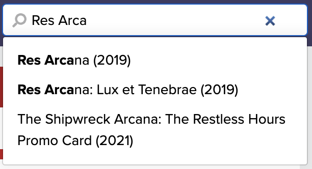
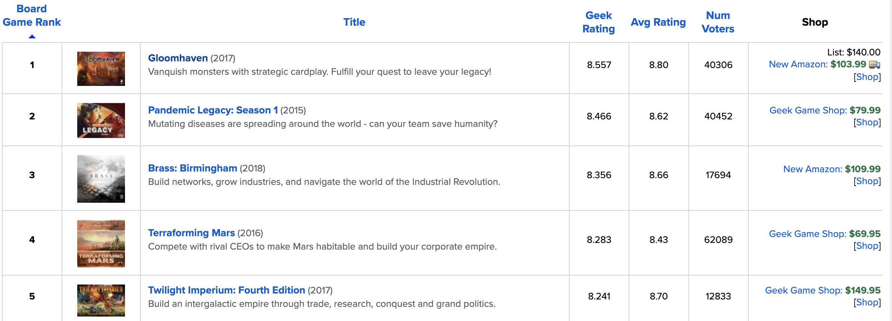

Searching for Board Games
How to Search for a Specific Game
When looking for a game by its name, the easiest way to do so is using the search field in the navigation bar at the top of the screen.

Once you start typing, you will see some name suggestions, as well as some other search criteria. You can either click on the game in the suggestion list, or continue to type out the whole name, and then press Enter (or its equivalent on mobile).
After you've selected the game, you will be brought to a page that shows all the details about it. If you are unfamiliar with a game detail screen, check out this guide to learn more about all the cool tidbits on these pages.
Discovering New or Different Games
If you want to find some new or different games, there are a few ways to go about it. One approach is searching for games by popularity. The games shown on BoardGameGeek are ranked by users. This is an easy way to discover new games and give you some guidance. The other approach is searching by categories, game mechanics, or game publishers. Note that this is more for experienced users of the site, or for people that have a good grasp of the hobby.
Browsing By Popularity
To search all the games by popularity, start by clicking on the "Browse" menu in the navigation bar at the top of the screen. A little menu will appear with some options. Select the "All Boardgames" option from the list. You will be brought to another screen showing a table full of games.
Looking at the table shown above, you can see the following details:
- Board Game Rank: The ranking given to a game based on the ratings users have given the game.
- Game Image: There is a column that shows an image of the game's box cover.
- Title: The name of the game.
- Geek Rating: The rating (out of 10) that is assigned to a game by BoardGameGeek's algorithm.
- Avg Rating: The average rating (out of 10) that users have given the game.
- Num Voters: The numer of users that have given the game a rating.
- Shop: This shows a price and a link to purchase the game.
Browsing By Category, Mechanics, and More!
There are several other options for browsing that are shown in the menu. Functionally these different options are similar, and each one will be briefly discussed below.
Category
Using Advanced Search
When you want to get